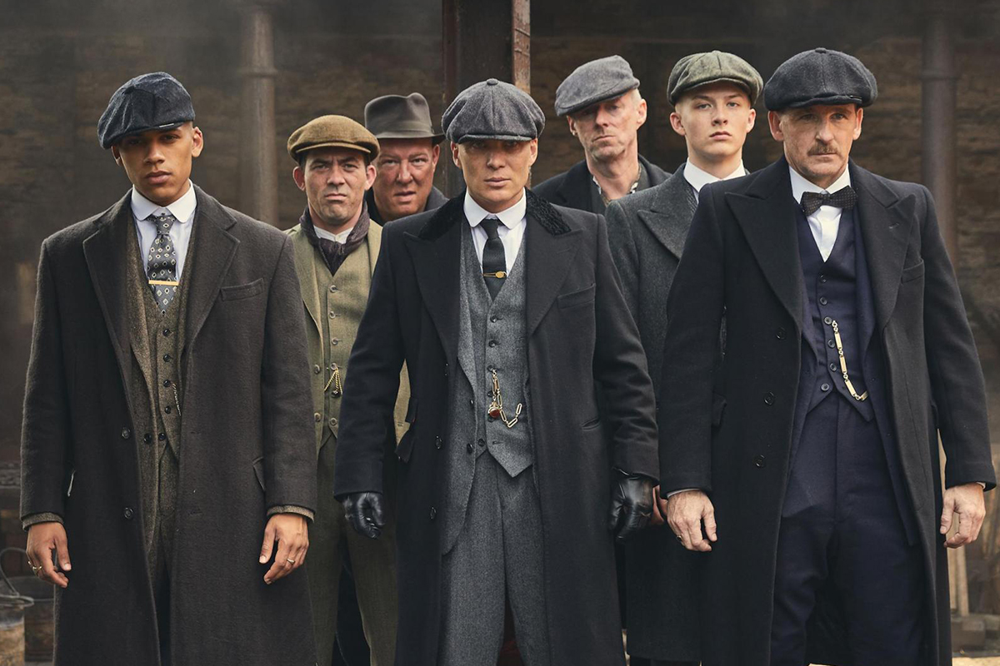

เกือบ 1 ทศวรรษที่ Peaky Blinders งานดรามา, อาชญากรรมของเน็ตฟลิกซ์-บีบีซี (BBC-Netflix) เรื่องของทอมมี เชลบี (Tommy หรือ Thomas Shelby) กับก๊วนแก๊งนอกกฎหมายที่ควบคุมท้องถนน และมีชีวิตแทรกซึมอยู่ในสังคมชั้นสูงของเบอร์มิงแฮม (Birmingham) ประเทศอังกฤษ ยุค 1920s กลายเป็นซีรีส์ฮิต ทั้งในอังกฤษบ้านเกิดและทั่วโลก ถึงเป็นเรื่องที่แต่งขึ้นแต่ทางเทคนิคพูดได้ว่า ซีรีส์เรื่องนี้มีที่มาจากเรื่องจริง เมื่อมีที่มาจากแก๊งจริงๆ ชื่อเดียวกับซีรีส์ ซึ่งมีอิทธิพลในแถบตอนกลาง (Midlands) ของอังกฤษเช่นกัน แต่อย่างแรกที่ผิดจากเรื่องเล่าบนจอของสตีเวน ไนท์ (Steven Knight) ก็คือ พวกเขามีบทบาทในช่วงปลายศตวรรษที่ 18 ไม่ได้ต่อตรงจากหลังสงครามโลกครั้งที่หนึ่ง ขณะที่เนื้อหาส่วนใหญ่ถูกแต่งขึ้นเพื่อเร้าอารมณ์ โดยไนท์ให้สัมภาษณ์กับฮิสทอรีส์ เอ็กซ์ตรา (History Extra) ว่า เขาสร้างสรรค์ซีรีส์เรื่องนี้โดยมีที่มาจากเรื่องของพ่อ ที่ว่าด้วยหนุ่มๆ ซึ่ง “แต่งตัวเนี้ยบๆ, สวมหมวกแก็ป และมีปืนอยู่ในกระเป๋า”
